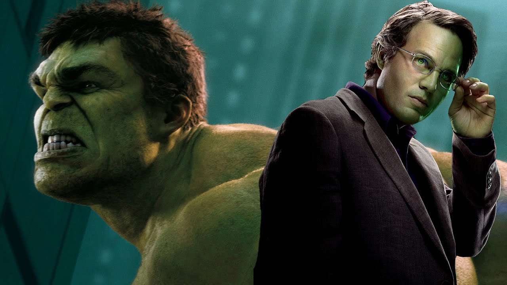

Protagonistas

Robert Downey Jr como Tony Stark / Iron Man
El líder y benefactor de los Vengadores, que es auto descrito como un genio, multimillonario, playboy y filántropo con armaduras electromecánicas de su propia creación. El co-director Joe Russo explicó que Stark "siente que esta gran amenaza se acerca, por lo que está haciendo todo lo que está en su poder para mantener a salvo a la Tierra". Downey agregó que Stark tendría objetivos más pequeños que en películas anteriores
Chris Hemsworth como Thor
Un Vengador y el nuevo rey de Asgard basado en la deidad mitológica nórdica homónima. Joe Russo declaró que la historia de Thor se retoma después de los acontecimientos de Thor: Ragnarok, que lo encuentra en un "lugar muy profundo...muy interesante" con una "motivación emocional real". Thor ahora empuña una hacha de batalla mística conocida como la Stormbreaker (Rompetormentas, en español), después de la destrucción de su martillo Mjolnir a manos de Hela en Thor: Ragnarok.
Mark Ruffalo como Bruce Banner / Hulk
Un Vengador y genio científico que, debido a haber sido expuesto a la radiación gamma, se transforma en un monstruo verde cuando se enfurece. Banner pasa la película tratando de reintegrarse con los Vengadores, y también trata de "impresionar a todos con lo peligroso que es Thanos". Esto continúa un arco de la historia para el personaje que se estableció en Thor: Ragnarok y concluye en la cuarta película de los Vengadores, con la diferencia entre Hulk y Banner "comenzando a difuminarse un poco". Ruffalo describió a Hulk en Infinity War como teniendo la capacidad mental de un niño de cinco años.

Chris Evans como Steve Rogers / Capitán América
Un superhéroe fugitivo y líder de una facción de los Vengadores, quien fue un veterano de la Segunda Guerra Mundial mejorado hasta la cima de la fisicalidad humana mediante un suero experimental y congelado en animación suspendida antes de despertarse en el mundo moderno. Joe Russo dijo que el personaje lucha con el conflicto entre su responsabilidad para con él y su responsabilidad hacia los demás. El personaje encarna el "espíritu" de su identidad alternativa de los cómics, Nómada, en la película, y recibe nuevos guanteletes de vibranium de Shuri para reemplazar su escudo circular tradicional.

Scarlett Johansson como Natasha Romanoff / Black Widow
Una espía altamente entrenada, y una ex Vengadora y agente de S.H.I.E.L.D. Johansson dijo que la situación de Romanoff después de los acontecimientos de Capitán América: Civil War ha sido "un momento oscuro. No diría que mi personaje ha sido particularmente esperanzador, pero creo que ella se ha endurecido aún más de lo que probablemente era antes".